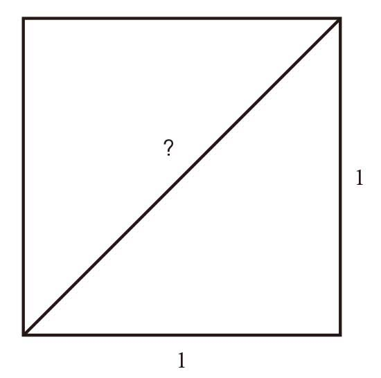

传说中，毕达哥拉斯学派将一条座右铭刻在门楣上：万物皆是数字。毫无疑问，我们大多数人对毕达哥拉斯学派都非常陌生。关于这个古希腊学派，我们唯一确定的可能就是毕达哥拉斯定理，即直角三角形斜边边长的平方等于其他两边边长的平方和。其实，这条定理的基本概念早在毕达哥拉斯之前就已被人提出来了，但是，定理的证明可能要归功于毕达哥拉斯或者他的门徒。
几何学（我将在第5章深入讨论）似乎是人类继整数计数之后最早探讨的一个数学领域。我们不清楚几何学起源的确切时间和具体过程。大多数古希腊人认为几何学源自埃及，但其实一些描述简单几何关系（如毕达哥拉斯定理）的相似概念，在巴比伦、美索不达米亚和东方出现的时间更早。古埃及把从事几何研究的人称作“司绳”（rope stretcher），暗示这门学科与从事建筑测量及土地分割的人员有关。几何学之所以成为人类较早研究的学科之一，从这个表达上也许可以略知一二。［现代英语中的“几何学”（geometry）一词源于希腊语中“地球”和“测量”这两个词。］但是，毕达哥拉斯及其门徒研究的并不是这种需要亲力亲为的实用数学。
毕达哥拉斯出生于公元前570年左右，古希腊的数学研究就是从那个时期开始的。据说，毕达哥拉斯去过埃及。他从埃及人那里汲取了一些想法和概念，后来都被纳入毕达哥拉斯学派的信仰体系，该学派的主要成员被人称作数学家（mathematikoi）。前文的思想实验告诉我们，数字的起源可能与现实世界密切相关。毕达哥拉斯学派的功劳则是将这个概念提升到基本法则的高度，但与此同时，他们也将数学与简单数字区别开，使数学有可能摆脱束缚，无须直接应用于我们周围的物质世界。
毫无疑问，毕达哥拉斯学派超越了计数的限制。他们认识到图形的重要作用，并将图形变成一个重要工具，从而拉开了现代数学与现代科学的漫长历史的序幕。从一定程度上看，所有人都会总结规律（事实上，对周围世界有反应的所有生物都会如此）。如果做任何事都需要从头学起，那么人生的复杂程度就会远胜当前。但实际情况并非如此。借助规律，我们不仅可以认识周围的世界，还可以对探知的一切做出反应。例如，假设我设计了一个可以打开卧室窗户的机器人。事实上，所谓的卧室窗户其实是一扇门，正对着一个法式小阳台。因此，我设计的这个机器人必须学会把钥匙插进位于墙上某个位置的锁孔，然后转动钥匙，再按下位于另一个位置的门把手，最后推开门。不仅如此，它还必须控制好力量的大小，以免损坏这扇门。
我家客厅的窗户与之相同，但是位置不一样。如果我把这个机器人搬到客厅，那么尽管我编写的程序十分精确，但它仍然会找不到目标，也无法完成打开窗户这个任务。当然，如果客厅采用的是上下推拉式窗户，那么后果就会更加严重。在掌握门窗等事物的规律之后，我们就可以有针对性地采取应对措施，而不需要学习每一扇窗户的打开方法。
规律在我们人类了解宇宙奥秘的过程中发挥了同样的作用，所有科学都在利用规律的基础上简化了理解过程。如果必须逐个地研究所有原子，我们将永远无法探知宇宙的秘密。但是，如果我们可以找出原子的一般规律，并将这条规律应用于所有原子上，我们的研究就可以取得进展。
在毕达哥拉斯学派的鼎盛时期，古希腊人还没有提出原子的概念（“原子”一词源于希腊语中的atomos，意思是“不可分割的东西”），但是他们仍然强烈地感受到了规律的重要性，包括几何图形的规律、音乐和弦的规律和数字的某些规律。然而，他们对规律的利用达到了过犹不及的地步，这也是人类经常犯的一个错误。我们非常善于无中生有，总结出某种根本不存在的规律，包括视觉规律（例如，从一片阴影中看出一个妖怪）和统计规律（例如，我们总希望从一系列事件中总结出前因后果，即使这些事件纯粹是随机事件，毫无联系可言）。
别忘了，毕达哥拉斯的这些门徒不仅仅是数学家，还是一个学派的成员，有独特而奇怪的信仰，例如，他们特别反感吃豆子。据说，这种信仰源于某些神秘的象征意义，因为豆子的外形与人类的某个器官相似，所以对于他们来说，吃豆子的行为与同类相食没有多大区别，这种行为对于这个素食主义教派而言是不合适的。
在毕达哥拉斯的门徒看来，很多重要的规律都与整数密切相关。他们认为，宇宙万物的基础是数字，数字不仅是人类的发明创造，还揭示了现实世界的基本架构。与所有凭借一己之力在这个世界中谋取立足之地的生物一样，数字也被他们赋予了各种属性。例如，数字1与思想及其独一无二的特性相关；数字2表示意见，因为他们认为意见是需要分享的；数字3与完整性有关，这是因为所有完整的事物都必须包括开端、中间和结尾，具体的事物需要三个维度才能定义它们的物理存在。
就这样，他们发现了一条又一条规律。例如，由于奇数被视为阳性的，而偶数是阴性的，所以数字5表示婚姻（这里的“婚姻”一词可能是维多利亚时期的委婉语），因为它把第一个真正的奇数3（他们认为数字1过于独特，因此不应该归属于奇数的行列）和第一个偶数2融为一体。对数字的这种联想在数字10上达到了巅峰，他们认为10表示完美。10不仅是1、2、3、4这4个数字之和，而且10个点可以排列成一个完美的等边三角形。
毕达哥拉斯学派还从音乐中找出了数字规律。他们不仅发现音乐节奏有某种规律，还发现乐器的琴弦或管腔长度必须符合某种规律，才能演奏出悦耳动听的乐曲。例如，把琴弦加长一倍，演奏出的音调就会降八度。此外，他们还找到了演奏其他悦耳和声所需要的琴弦比。这种以数学方式研究音乐的行为似乎无足轻重，但是它一直被视为人类第一次利用数字得出某种科学法则，因此成为科学发展史上的一个重要里程碑。在此之前，人类对自然的研究全部是定性研究，而从此以后，定量研究也登上了历史的舞台。
过分相信数学与现实之间的联系，并以此为依据进行演绎推理，是一种非常危险的行为。（至少，亚里士多德是这样认为的，这位做不到绝对公允的哲学家也对这个古老的学派提出了严厉的批评。）一位名叫菲洛劳斯的毕达哥拉斯门徒就犯了这个错误。毕达哥拉斯学派对数字10的完美性倍加推崇，对此深信不疑的菲洛劳斯因此认为，宇宙间必然还存在一颗不为人知的行星。他把太阳、月亮、地球、已知行星以及恒星的数量相加，即1 + 1 + 1 + 5 + 1，得到的结果是9。据说，菲洛劳斯认为，由于宇宙必须处于完美平衡的状态（只有这样，才与毕达哥拉斯学派深信不疑的规律相一致），所以所有这些天体的数量和必须是10，这是由数字10的重要性决定的。他因此推断必然存在一颗未知的行星。
现在，人们很容易将他推断存在的这颗行星与当时尚未被人类发现的天王星（我们就不提海王星了）联系起来，但是他提出的另外一个观点却更加疯狂（从物理学角度看，也更加不可能）。他认为，宇宙中还有一个与地球相对应的“反地球”。当时，我们更加熟悉的希腊宇宙论（在这套理论中，宇宙与太阳系相似，但地球是宇宙的中心）还没有出现，关于宇宙结构的普遍观点是宇宙中心有一团火，构成了整个宇宙的光源。他们猜测，反地球就在这团火的另一侧，因此我们永远看不到它。
尽管科幻小说中经常会重现这样的行星［注意，不要与祝融星（Vulcan）混淆。人们曾经假想在水星的轨道内侧还存在一颗行星，即祝融星］，但是天文学从来没有找到它确实存在的证据，它只是人们根据宇宙运行规律的数学模型进行演绎推理的产物。尽管现代物理学也会进行这样的演绎推理，但是我们使用的数学方法已经得到了不断完善，而且在提出某个假设之后，我们还会通过观察或者实验，验证这种假设是否成立。然而，在菲洛劳斯那个时代，人们不可能利用这个方法验证反地球理论的真伪。
尽管也遇到过一些小的挫折，但是规律在人类探索宇宙本质的活动中占据了绝对优势，所以这种演绎推理的方法必然会受到重视。有的规律非常明显，你是不可能视而不见的。比如，我们都非常熟悉昼夜交替的规律。在时间方面，有些规律［例如一天可以分成24个小时，一个星期有7天（这些规律都是基于太阳、月亮等星体的运转形成的）］是人类总结出来的，仅在人类使用这些规律时才有意义，而有些规律（例如天、年等）则是自然现象，是真实存在的自然规律。
太阳的运转遵循某些规律（运动方向始终不变，速度大致相同）。在更大的时间跨度里，太阳的高度变化，以及行星和恒星的光芒在天空中的重复性变化，都会表现出一些规律。此外，季节性交替也会表现出一定的规律。在时间跨度更大的情况下，生命本身也会表现出某些规律。因此，古希腊人借助各种规律来理解周围的世界，也在情理之中。
所谓的亲和数[1]，例如220和284，可能是源于毕达哥拉斯学派的另一个概念，虽然它源于数字之间的浪漫关系，但其实并没有那么夸张。这两个数字彼此之间“含情脉脉”（毕达哥拉斯学派认为这两个数字之间充满了爱情的味道），甚至引起了珠宝商的兴趣：他们设计的心形金属首饰被分成两半，上面分别刻有数字220和284。
对亲和数的探索是一场冒险之旅，有可能把你变成资深数学呆瓜。列出220的所有因数（即可以整除220的数），也就是1、2、4、5、10、11、20、22、44、55、110、220。不算220，把剩下的数相加，和为284。与220相比，284的因数则要少得多，仅有1、2、4、71、142、284。不算284，剩下的数字之和是220。在痴迷于整数的毕达哥拉斯学派看来，这种关系具有让人无法抗拒的魔力。
在我们看来，这种关系仅是一个有意思的现象，在人们问起“为什么要用220这个数”时你可以卖弄一番，也可以把它变成一个私人的小秘密。但是，在把数字视为万物基础的毕达哥拉斯学派看来，这些数字显得尤为重要，应该被供奉在重要数字[2]的神殿之中。在探索宇宙奥秘时，如果完全依赖于数学（具体地说，就是整数），就会眼前漆黑一片，看不见前方的道路。
很显然，这就是数学伊甸园里的一条蛇。据传，有一个人不小心闯进了这个整数统治一切的王国，结果丢掉了性命。
不难想象，深信数字具有重要意义的毕达哥拉斯门徒会不惜一切来维护他们的信仰。传说中，他们确实也是这样做的。受害者名叫希帕索斯，是毕达哥拉斯学派的成员之一，因为胆敢将他们发现的“肮脏”的数学秘密公之于众而遭到杀害。可以想象，如果某个主流教派突然发现，他们的某一段经文宣称该宗教建立在子虚乌有的基础之上，那么他们肯定会想方设法加以掩饰的。而且，整个教派肯定会坐立不安。
一切都源于毕达哥拉斯提出的那条显然正确的定理。当人们利用这条定理计算单位边长正方形的对角线长度时，问题出现了。这个正方形的边长可以是实践活动中的任何单位长度，可以是1厘米，也可以是1英里[3]。但是，方便起见，我们可以认为它的长度就是1。当然，这个长度可以是任意值，然后我们可以将这个长度定义成一个新的长度单位，从而把正方形的边长变成单位长度。

我们画出了这个正方形的对角线。到目前为止，没有任何问题。根据毕达哥拉斯学派最喜欢的那条定理，可以很容易地计算出这条对角线的长度，因为它是直角三角形的最长边（事实上，我们可以从两个全等的直角三角形中任选一个）。也就是说，借助数学这个功能强大的工具，我们求出直角三角形另外两边的平方和，就可以得出这条对角线长度的平方。由于我们将正方形的边长定义为1个单位长度，因此对角线的平方就等于12 + 12，也就是1 + 1，结果等于2。同样，我们可以方便地把这条对角线的长度（也就是我们试图计算的值）定义为 ，即2的平方根。这个数的平方是2。
，即2的平方根。这个数的平方是2。
整个过程似乎没有任何问题。但是，当毕达哥拉斯学派的门徒试图计算的确切值时，情况一下子变得复杂起来。别忘了，在他们的心目中，整个宇宙的基础就是整数。因此，所有的数字，包括，都应该可以通过整数表现出来。显然不等于1，因为1的平方等于1，而不是2。同样，也不可能等于2，因为2的平方是4。这不成问题，因为毕达哥拉斯学派的门徒知道在1和2之间还有其他的数，这些数是两个整数的比，也就是我们现在所说的分数。
如果古希腊人真正理解了分数的概念，毕达哥拉斯学派在数字抽象化进程上的步伐就会迈得更大一些，而不会将整数的存在与现实世界中具体事物的数量统计割裂开来。在我们使用正整数时，这些数字可以随时回归到具体事物的数量上来。比如，如果我有3头山羊，你牵走1头，那么我只剩下2头山羊。但是，如果朝着简单分数（例如一半，即1/2）迈进一步，这些数字就再也不能同样完美地表示现实世界中的事物了。不错，2头山羊正好是4头山羊的1/2，但是，1/2个蛋糕在现实世界中只能是一个近似值——因为我们需要将某个物品一分为二，而这分成的两个部分可以非常相似，但绝不可能一模一样。
在分割蛋糕等物品时，我们会不由自主地想到分数。在空间测量时，分数同样非常重要。在划分土地或者测量建筑用石块的大小时，我们可以用整数加上测量单位来表示。最初，人们是用身体的某个部位来做测量单位的，例如拇指、脚、肘的长度（肘长指肘部至中指指尖的距离），以及步（passum）。步的1 000倍就是千步（mille passus），即1英里。但是，同数山羊不同，在测量石块大小时，我们有时候用了7次拇指之后，长度还会剩下一点儿，需要使用拇指的一部分来完成整个测量活动。这一部分的长度在0与一整根拇指之间，因此需要使用分数的概念。
尽管希腊人把分数视为与整数不同的数字，但是他们的抽象化实现得并不彻底，因为他们使用分数的方式与我们不同。首先，他们用来表示分数的符号与我们不同。例如，在表示1/4时，他们先直接写出字母δ，用来表示数字4，再在这个本来就容易混淆的字母上方添加一个类似于重音符号的标记。第二个希腊字母是β，因此用β表示2是可以理解的。但是，令人摸不着头脑的是，因为某些不明确的历史原因，他们在β上方添加一条横线，用来表示2/3。这种奇怪的表示法很可能是从埃及人的习惯做法演变而来的。在埃及人知道的分数中，大多数的分子都是1，而2/3是其中一个例外，因此他们用专门的符号来表示这个分数。
古希腊人用来表示1/2的专用符号也很奇怪——它不是希腊字母，而是一个闪电形状的符号（这个符号也不是标准写法，1/2还有其他几种表示方法）。正因为如此，分数运算实在是一个令人头疼的任务。现代人可以将分子、分母同时乘以一个数，将分数变成方便运算的形式，但是古希腊人没有这样的方法可以利用。他们最常见的做法是买一本加法表，从上面可以查询到1/2 + 1/6的答案是4/6（或者2/3）。尽管古希腊人把分数看成整数的比，但是他们的分数没有明确的分子和分母。
然而，在考虑古希腊人的方法时，我们也不应该认为他们的方法过于简单。对于分数运算可能带来的错综复杂的后果，古希腊人有一定的认识。比毕达哥拉斯晚出生几十年的哲学家芝诺（Zeno）根据分数相加时的奇异特性，提出了一个悖论，他本人也因此享有盛名。芝诺属于埃利亚学派（位于埃利亚，这座古城的旧址就在现在意大利的韦利亚海堡外），该学派认为变化与运动是一种错觉。尽管他们对此深信不疑，但是经验似乎表明变化无处不在。为了捍卫学派的论断，芝诺提出了一系列悖论，以证明我们对变化及运动的认识是错误的。在埃利亚学派看来，这个结果意味着大多数人赖以理解变化的经验是错误的。
在芝诺悖论中，最著名的可能是阿喀琉斯与乌龟赛跑的悖论。阿喀琉斯是芝诺那个时代的超级名人，与他赛跑的却是一只动作缓慢且笨重的乌龟。这显然是不公平的，但是芝诺断言，从阿喀琉斯的角度稍加考虑，就会发现这位英雄追不上慢吞吞的乌龟，条件是阿喀琉斯让乌龟先跑一两分钟。毕竟他是一名英雄，让乌龟占这样的便宜并不过分。但是，芝诺指出，即使阿喀琉斯跑得比乌龟快得多，他也不可能超过乌龟。
为了方便理解芝诺的理由，我们假设阿喀琉斯的速度是乌龟的两倍。实际上，他的速度肯定要更快，但是这个假设可以简化我们的数学推理，而且无论阿喀琉斯跑得有多快，这个证明过程都同样有效。乌龟起跑之后，我们的英雄还在等待。等乌龟跑出去1码（约为0.9米）之后，他开始追赶。很快，他就跑完了1码的距离，但是，在他跑这段距离的同时，乌龟还在继续往前跑。这段时间里，乌龟将前进1/2码。阿喀琉斯跑完这1/2码后，发现乌龟还领先他1/4码，他不得不继续追赶。于是，这个过程不断重复，永远不会结束。阿喀琉斯每次到达乌龟先前所在的位置时，乌龟已经又前进了一小段距离。因此，阿喀琉斯永远也追不上乌龟。
我们不清楚芝诺是否真的不明白其中的道理，但是古希腊数学完全可以解释这个奇怪的悖论。事实上，由于古希腊人理解分数的方式非常独特（从我们现代人的角度来看），而且他们研究数学时使用了一种非常直观的方法（他们对于几何学的热情经久不衰），所以对于他们来说，这个问题很好解释。古希腊人对整数有一种难以割舍的感情，在他们的心目中，“2”（用字母β表示）的意思是“两个单位组成的集合”。这个概念难以表述，但是与我们现在的理解存在微妙的差别。
他们对分数的理解与我们更加不同。在希腊人眼中，构成分数的两个整数仍然保持着各自的意义，他们把1/2、1/3分别理解成“第二部分”、“第三部分”。我们把1/2理解成一个对象（1）被分割成2个部分，而在古希腊人的眼中，它则是放到一起可以形成1的两个完整对象（2个部分）。就这样，他们彻底回避了1/2带来的抽象化问题。例如，他们不会想到半块蛋糕的近似值问题，因为他们想到的是，两块完整的蛋糕放在一起之后，变成了一块更大的蛋糕。阿喀琉斯与乌龟之间的每一段距离，利用我们现代人使用的算式来表示的话，就是：
1 + 1/2 + 1/4 + 1/8 + 1/16 + …
而用古希腊人的方法来考虑的话，就是一个箱子被一块单位体积的石头占据了一半空间。然后，我们再装进去一块石头。第二块石头是单位体积的1/2，也就是说，两块这样的石头合在一起正好是一块单位体积的石头。第三次装进去的石头是单位体积的1/4，也就是说，4块这样的石头加到一起才等于一块单位体积的石头。以此类推，这些石头越加越多，箱子越装越满，但是永远也装不满。这是毕达哥拉斯学派的整数情结留给我们的遗产。古希腊人对分数的理解与我们不同，在他们的心目中，分数表示用2个、3个或者4个完整物体拼凑成另外一个物体。
现在，我们知道下面这个级数趋近于2：
1 + 1/2 + 1/4 + 1/8 + 1/16 + …
每加上一项之后，该级数就会更加接近2，但是永远不能达到2。在理论上，如果这个级数包含该序列的整个无限集合，最终的和就会等于2。但是，无论有多少项，和都不会超过2。我们说，随着级数的项数趋近无穷大，和就会趋近2。然而，在现实世界中，没等乌龟跑出2码的距离，阿喀琉斯就已超过乌龟了。也就是说，芝诺悖论被破解了。毫无疑问，古希腊人的级数求和方法非常直观，比我们的现代方法更容易理解，因为我们可以清楚地看出，由于装填的石头越来越小，箱子永远都装不满。但是，仅从下面这个级数
1 + 1/2 + 1/4 + 1/8 + 1/16 + …
你却不容易看出它的和是一个有限数。事实上，下面这个极其简单的级数
1 + 1/2 + 1/3 + 1/4 + 1/5 + …
就不具有数学家所说的“收敛性”。随着项数趋近无穷大，它的和也将趋于无穷大。
接下来，我继续讲关于毕达哥拉斯学派的故事。他们正在考虑如何用整数比的形式来表示2的平方根。如果你对分数略有了解，就会知道这个值与707/500相近，但是又不完全相等。严格地说，在古希腊人看来，这个数应该等于707个1/500。但是，古希腊人可能会把它表示成1、1/5、1/5、1/100、1/500、1/500这种形式，尽管这种表达方式更令人困惑。在绞尽脑汁之后，毕达哥拉斯学派借助逻辑分析，证明不可能表示成任何两个整数之比的形式，任何整数都不行。这个新数与他们的世界观格格不入，他们认为整数是宇宙基础的信念摇摇欲坠。
证明不能表示成整数之比，似乎并不是一件容易的事。乍看之下，古希腊人似乎必须逐个检查所有分数，以确保任何分数的值都不等于。这显然是一件不可能完成的任务，因为分数有无穷多个。但对于酷爱逻辑的古希腊人而言，这不是难事，他们利用自己对奇数和偶数特性的粗浅认识，再加上一点儿逻辑推理，就完成了这项任务。他们采用的是一种常用的经典证明法：首先假设某个命题是真实的，然后根据这个假设得出一个不可能成立的结论，从而证明这个命题是假的。下面是具体的证明过程。
假设某个整数之比（借用古希腊人的习惯，我们设这个整数之比为α/β）可以表示该对角线的长度，也就是说，α、β为整数，且α/β=。为简单起见，我们假设α和β是可以得出这个比值的最小整数，也就是说，这两个整数可以构成2/3这种形式的比，而不是4/6或200/300这种形式的比。
为了避免棘手的除法运算，我们采用了一种老办法：等式两边同时乘以β。由此得到：
α=β×
接下来，左右两边进行平方运算，以消去平方根：
α2=β 2×2
到目前为止，我们使用的都是中学学过的简单数学知识（古希腊人的做法略有不同，但结果是一样的）。古希腊人知道，任何数乘以2，积都是偶数。因此，上述等式的右边是一个偶数，这就意味着α2也是一个偶数。由此可知，α是偶数，因为奇数的平方肯定是奇数。
所有的偶数都可以被2整除，因此α2可以被4整除。这就说明β2×2也可以被4整除，从而证明β2可以被2整除，也就是说，β2是偶数。既然β2是偶数，那么β也一定是偶数，也就是说，它可以被2整除。
我们的目的就要达到了。从上述证明可知，α和β都可以被2整除，因此它们就不可能像最初假设的那样，是比值等于的最小整数。也就是说，我们经过证明发现，最小的两个整数并不是最小，从而说明原命题在逻辑上不成立。因此，我们可以确定比值等于的整数是不存在的。
对于现代人而言，根本不是什么问题，我们可以若无其事地使用这个数，也可以把这条对角线的长度表示成小数形式，还可以根据需要保留小数的位数，例如，1.414 213 562…。但是，对于有整数情结的毕达哥拉斯学派而言，他们没有任何选择。现在，我们把这样的数称作无理数，原因是它不能表示成整数之比的形式。而对毕达哥拉斯学派而言，这些数似乎真的对理性基础构成了威胁，至少在他们将数字与几何图形联系到一起时，会让他们遭遇麻烦。据说，可怜的希帕索斯因为泄露无理数的秘密而惨遭报复，被扔到水里淹死了。实际上，当时的几何学研究完全不同于数字研究。在毕达哥拉斯学派的心目中，两者之间的区别非常大，几何图形似乎与数字毫不相干。他们认为，几何学是一种直观概念，而不是一个数字概念。
现在，在提到这些除整数以外的数时，无论是像这种无理数，还是表示成十进制序列的有理数，例如把2/3写成0.666 666…的形式，我们都可以称之为“实数”。我们可以得心应手地使用无理数乃至所有实数。手动计算已经在很大程度上被计算机取而代之，事实证明，实数的处理毫无难度可言。人们通常根据设备的计算能力，对这些数字进行四舍五入的处理，因此0.666 666…（其中“…”表示该数可以无休止地写下去）就会在最后一位小数上进行四舍五入，变成0.666 667。
总的来说，我们不清楚实数是不是“真实”的——考虑到它与宇宙的本质直接相关，而不是一个数学概念。在数学中，圆的周长与直径的比值是无理数π，但是在现实世界中，我们从来没有也不可能完美地实现这个比值。即使我们通过某种方法画出一个完美的圆，但是鉴于它是由原子构成的，我们仍然需要考虑粒度问题。无论物质世界之中的这个圆是如何构造的，无论它是一块圆形金属还是纸上画出来的图形，都不会具有完美的连续性。这就意味着我们永远无法在我们构建的实物与数学的预言之间建立理想的一一对应关系。
当然，我们可以将物质排除在外，只考虑空间自身的问题。但是，现代物理学告诉我们，即使空间也可能存在粒度问题，并不是完全连续的，至多只能在普朗克长度这个量级实现量子化。普朗克长度是不可测量的极小长度，约等于10–35米，是最小的原子——氢原子直径的10的25次方分之一。然而，现实世界的这种不可避免的粗糙性在数学世界中却根本不存在。在那里，一切都有可能，数值的连续性更是惯常现象。宇宙可能无边无际，某些量子特性可能与实数保持一致，但这仅仅是一种可能，而实数很有可能只是现实世界的一种近似表示。
然而，古希腊数学家并不了解物质世界的这种特性。他们没有花费太多精力去寻找一种可以与现实世界精确吻合的形式数学，而是一头扎进理论数学的研究之中。在这个与尘世隔绝的完美世界里，有一个神秘的代表人物——欧几里得。
[1] 亲和数指一对存在特殊关系的数。一般来讲，如果两个数中任何一个数都是另一个数的真因数之和，则称这两个数是亲和数。——译者注
[2] 有的数学家认为，所有数字都非常重要。但如果你认为某些数值小的数字不那么重要，那么这些数字也会因为小而变得重要。
[3] 1英里≈1.61千米。——编者注